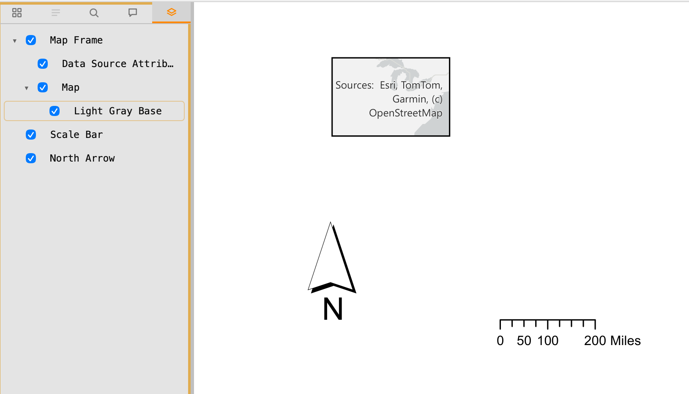

Optional content layers
PDFs can carry optional content groups (OCG) — the "Layers" panel you'd see in Acrobat for CAD drawings, GIS exports, or multi-language documents. Vimong shows the same panel: a Layers tab appears in the sidebar whenever the open document has any, and each layer has its own checkbox to show or hide it.

Sample file: ocg_map_test.pdf from py-pdf/sample-files